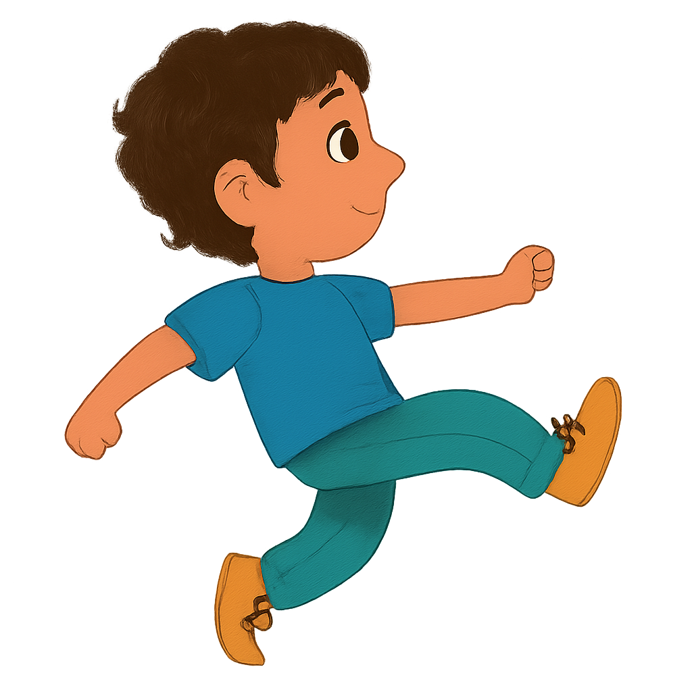
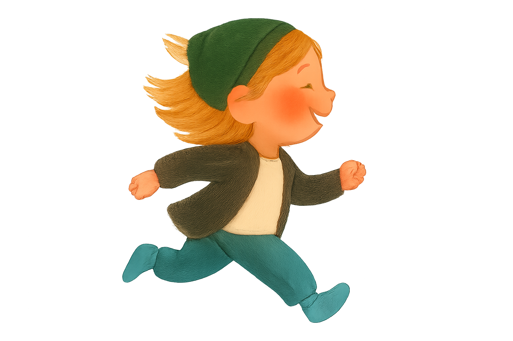
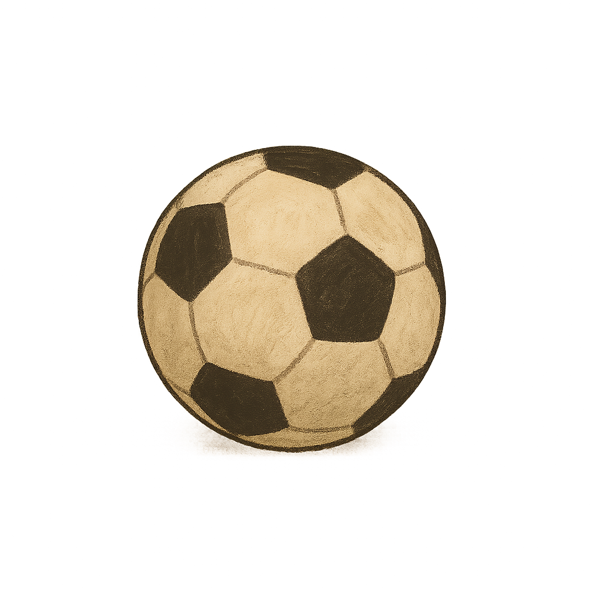
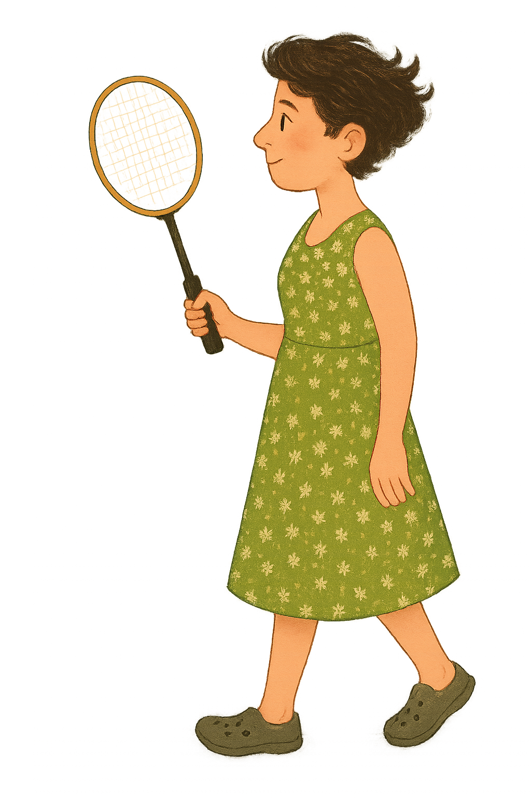

Семейный кооператив Шляпа



Привет! Мы – сообщество семей. Нас объединяют общие ценности и желание качественно проживать вместе часть жизни. Мы совместно заботимся о детях, познаём, гуляем, творим, готовим и едим – в общем, хорошо проводим время.
Шляпа – это место, где дети и взрослые относятся друг к другу бережно и уважительно. Взрослые заботятся о физической и эмоциональной безопасности детей, не имея скрытых намерений, без манипуляций, обмана или насилия.
Наше сообщество – кооператив. Это значит, что мы совместно владеем проектом, кажд:ая из нас активно участвует в управлении сообществом и заботится о нем. Все мы – хозяй:ки шляпы – равны в принятии любых решений.
Среди хозя:ек действует принцип “от каждо:й по способностям, каждо:й по потребностям”. Мы искренне стремимся вкладываться в сообщество, а сообщество прозрачно распределяет ресурсы.
Семьи, которые хотят только приводить своих детей в шляпу, но не хотят участвовать в кооперативе, имеют статус гость:ий. Они участвуют в наших днях на коммерческой основе.
Поскольку мы не являемся учреждением, у нас нет фиксированного расписания. Наши дни похожи на качественные семейные выходные.
Обычно мы встречаемся утром и обсуждаем, чем бы нам сегодня заняться. Тут же можем обсудить вопросы и проблемы, связанные с деятельностью или правила кооператива.
Дальше начинаются самые важные дела, совместные или индивидуальные. Кто-то лепит из глины, кто-то мастерит картонных монстров, часть людей могут пойти в парк или на футбольное поле, а кто-то, возможно, захочет приготовить обед и накормить всех желающих.
Может быть отдельные люди захотят позаниматься академическими штуками, и это отлично! Сообщество поддержит и постарается помочь ресурсами. Но академическая/«развивающая» деятельность не является приоритетной по сравнению с играми, творчеством или ковырянием в носу. Все дела равно важны.
Главным органом принятия решений в шляпе является Общий сбор. На Общем сборе могут приниматься/ отменяться/ меняться правила кооператива, решаются текущие вопросы и конфликты.
Голос каждо:й хозяй:ки равен остальным. Решения принимаются по принципам прямой демократии. Мы стремимся принимать решения на основе консенсуса, когда это возможно.
Все люди в шляпе руководствуются Правилами кооператива и принципами, отраженными в Конституции. Конституция и Правила отражают ценности сообщества и нужны для эффективного регулирования отношений внутри кооператива.
Равенство. Кажд:ая из нас имеет равный голос в принятии решений кооператива. Потребности, цели и интересы каждо:й из нас равно важны. При этом сообщество старается предоставить каждо:й равный доступ к ресурсам и к механизмам сообщества.
Свобода. Каждый человек может заниматься чем угодно, если это не пересекает чьих-либо границ, не мешает чьей-либо деятельности и не нарушает правил кооператива. Никто не может принуждать друг:ую к чему-либо.
Ненасилие. Мы уважительно относимся к каждой личности. В общении мы не имеем скрытых целей, не прибегаем к манипуляциям и обману. Обратная связь возможна только по запросу и только бережная.
Ответственность. Кажд:ая из нас ответственн:а за свои действия или бездействие.
От каждо:й по способностям. Кажд:ая хозяй:ка искренне старается вкладывать ресурсы (время, силы, деньги) в кооператив по своим возможностям. Вклад каждо:й не обязан быть равен остальным, важно намерение и высокий приоритет участия в кооперативе среди остальных дел хозяй:ки.
Каждо:й по потребностям. Кооператив искренне старается слышать потребности каждо:й хозяй:ки и удовлетворять их.
Семейный кооператив шляпа — не коммерческий проект. Мы не ставим цели заработать как можно больше денег. Мы стремимся получать ровно столько ресурсов, сколько необходимо и достаточно для комфортной жизни сообщества.
Бюджет кооператива формируется из взносов хозяе:к и оплаты посещений гост:ий.
Взнос каждой семьи-хозяйки устанавливается индивидуально, исходя из принципа «от каждо:й по способностям».
Стоимость посещения для гост:ий устанавливается решением кооператива.
По окончании каждого месяца, исходя из состояния бюджета и прогнозируемых доходов и расходов, кооператив формирует фонд запросов. Средства из этого фонда распределяются на потребности хозяе:к решением кооператива.
Семьи, которые хотят только приводить своих детей в шляпу, но не хотят участвовать в кооперативе, имеют статус гость:ий. Они участвуют в наших днях на коммерческой основе.
шляпа – не учреждение. У нас нет формальной структуры. Мы в первую очередь сообщество людей.
шляпа не предоставляет услуг. У нас нет клиенто:к. Мы работаем на сообщество, в интересах каждо:й хозяйки и сообщества в целом.
шляпа – не место для передержки детей. В первую очередь мы – люди, дети и взрослые, которые проводят время вместе, для взаимного удовольствия и пользы.
шляпа не занимается принуждением или манипуляциями для освоения людьми какой-нибудь программы или развития каких-нибудь навыков или знаний. Люди занимаются только своими интересами.
В шляпе нет начальства и подчиненных. Все равны.